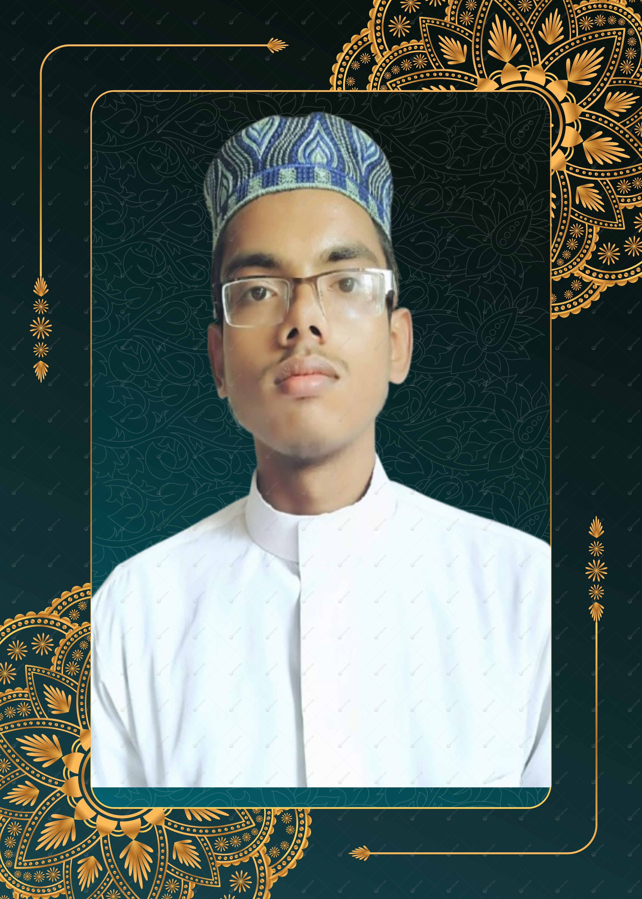
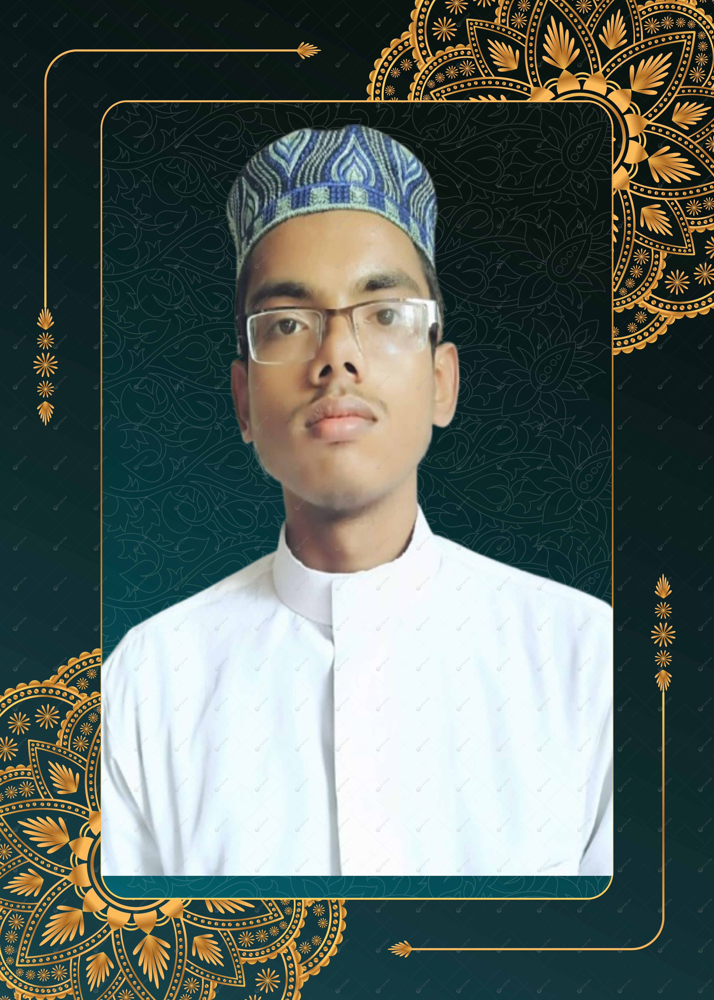

অফিসিয়াল ওয়েবসাইট
মো: তাসনিম আল-হুজাইফা মিরাজ
 

Curriculum Vitae (CV)
Personal Information
Name: Md. Tasnimm
Address: Kushtia, Bangladesh
Email: tasnimmuhammad51@gmail.com
Phone: +880 1330-989762
Career Objective
As a motivated and goal-oriented student, I aim to utilize my expertise in Arabic Language & Literature along with my skills in Web Development to contribute effectively to both my personal growth and the success of the organization.
Educational Qualifications
Examination
Institution
Result
Year
JDC
Sarsina Darus Sunnat Kamil Madrasah, Barishal
4.28
2018
Dakhil
Jhalokathi Kamil Madrasah, Jhalokathi
4.88
2020
Alim
Jhalokathi N. S. Kamil Madrasah, Jhalokathi
5.00
2022
Bachelor (Ongoing)
Islamic University, Kushtia — Department of Arabic Language & Literature
2nd Year
Ongoing
Training & Courses
Web Development Course — Programming Hero (Completed)
HTML, CSS, JavaScript, ES6
React.js, Node.js (Basic), API Handling
Responsive Web Design, Git & GitHub
Project-based Learning: Portfolio, Blog, E-commerce UI, etc.
Skills
Programming Languages: JavaScript, HTML5, CSS3
Framework & Library: React.js, Tailwind CSS
Tools: Git, GitHub, VS Code, Chrome DevTools
Language Skills:
Bangla — Native
Arabic — Academic Proficiency
English — Intermediate (Reading & Writing)
Personal Qualities
Fast learner with strong problem-solving skills
Effective teamwork and communication abilities
Skilled in time management
السيرة الذاتية
المعلومات الشخصية
الاسم: محمد تاسنيم
العنوان: كوشتيا، بنغلاديش
tasnimmuhammad51@gmail.com : البريد الإلكتروني
+880 1330-989762 : رقم الهاتف
الهدف المهني
طالب طموح وهادف، أسعى إلى توظيف خبرتي في اللغة العربية وآدابها إلى جانب مهاراتي في تطوير الويب للمساهمة في تطوير ذاتي وتحقيق النجاح للمؤسسة التي أعمل بها.
المؤهلات الأكاديمية
المؤهل الدراسي
المؤسسة
المعدل
سنة التخرج
الشهادة الإعدادية (JDC)
معهد سارسينه دار السنّة كامل، باريشال
4.28
2018
الشهادة الثانوية (دخيل)
معهد جالوكاتي كامل، جالوكاتي
4.88
2020
الشهادة الثانوية العليا (عالمية)
معهد جالوكاتي كامل، جالوكاتي
5.00
2022
بكالوريوس (قيد الدراسة)
جامعة الإسلامية، كوشتيا — قسم اللغة العربية وآدابها
السنة الثانية
جارٍ
التدريب والدورات
دورة تطوير الويب — Programming Hero (مكتملة)
HTML، CSS، JavaScript، ES6
React.js، Node.js (أساسيات)، التعامل مع API
تصميم مواقع متجاوبة، Git و GitHub
تعليم قائم على المشاريع: بورتفوليو، مدونة، واجهة متجر إلكتروني، إلخ
المهارات
لغات البرمجة: JavaScript، HTML5، CSS3
الأطر والمكتبات: React.js، Tailwind CSS
الأدوات: Git، GitHub، VS Code، Chrome DevTools
مهارات اللغة:
البنغالية — اللغة الأم
العربية — إجادة أكاديمية
الإنجليزية — متوسطة (قراءة وكتابة)
الصفات الشخصية
سرعة التعلم والقدرة على حل المشكلات
العمل بروح الفريق ومهارات تواصل فعّالة
إجادة إدارة الوقت
Curriculum Vitae (CV)
ব্যক্তিগত তথ্য
নাম: মোঃ তাসনিম
ঠিকানা: কুষ্টিয়া, বাংলাদেশ
ইমেইল: tasnimmuhammad51@gmail.com
মোবাইল: 01330-989762
ক্যারিয়ার অবজেকটিভ
উদ্যমী এবং লক্ষ্যনিষ্ঠ শিক্ষার্থী হিসেবে আরবি ভাষা ও সাহিত্য এবং ওয়েব ডেভেলপমেন্টের দক্ষতা কাজে লাগিয়ে ব্যক্তিগত উন্নয়ন ও প্রতিষ্ঠানের সাফল্যে কার্যকর অবদান রাখতে চাই।
শিক্ষাগত যোগ্যতা
পরীক্ষা
প্রতিষ্ঠান
ফলাফল
পাসের সন
জেডিসি
সারসিনা দারু সুন্নাত কামিল মাদ্রাসা, পিরোজপুর
4.28
2018
দাখিল
ঝালকাঠি এন এস কামিল মাদ্রাসা, ঝালকাঠি
4.88
2020
আলিম
ঝালকাঠি এন এস কামিল মাদ্রাসা, ঝালকাঠি
5.00
2022
স্নাতক (চলমান)
ইসলামী বিশ্ববিদ্যালয়, কুষ্টিয়া — আরবি ভাষা ও সাহিত্য বিভাগ
২য় বর্ষ
চলমান
প্রশিক্ষণ ও কোর্স
Web Development Course — Programming Hero (Completed)
HTML, CSS, JavaScript, ES6
React.js, Node.js (Basic), API Handling
Responsive Web Design, Git & GitHub
Project-based learning: Portfolio, Blog, E-commerce UI ইত্যাদি
দক্ষতা (Skills)
Programming Languages: JavaScript, HTML5, CSS3
Framework & Library: React.js, Tailwind CSS
Tools: Git, GitHub, VS Code, Chrome DevTools
Language Skills:
বাংলা — Native
আরবি — Academic Proficiency
ইংরেজি — Intermediate (Reading & Writing)
ব্যক্তিগত গুণাবলী
দ্রুত শেখার ক্ষমতা ও সমস্যা সমাধানের দক্ষতা
টিমওয়ার্ক ও কার্যকর কমিউনিকেশন স্কিল
সময় ব্যবস্থাপনায় দক্ষতা
জীবন
আব্বা :
১. স্বাধীনতার সময়ে জন্ম ।
২. অল্প বয়সেই পিতাহীন হয়ে পরে।
৩. বড় ভাই তার পরিবারের সাথে থাকায় সংসারের প্রতি অমনোযোগি থাকে তাই আব্বার উপর সংসারের দায়িত্ব ভার পরে ।
৪.আব্বা দাদার রেখে জাওয়া সম্পত্তি দেখভাল করে সংসার পরিচালনা করলেও অন্য ভাইরা যৈৗবন ও সৈৗন্দর্য প্রদর্সনে ব্যাস্ত হয়ে সংসারের প্রতি প্রায় অমনোযোগি হয়ে পরে ।
৫. বুঝ হওয়ার পরে বিভিন্ন কাজ করে । কিছু সম্পদ অর্জন করে।
৬.ছারছীনা মাদ্রাসায় পড়ার ফলে আব্বা র্পদার প্রতি অত্যাধিক মনোযোগী থাকায় নিজের জন্য বিশাল বিরান ভূমিতে বাড়ি করে বিবাহের প্রস্তুতি নেয় ।
আম্মু :
ছোট বেলায় মা হরিয়ে সবার আদরে বড় হওয়া চমৎকার আদর্শের এক মহিয়সী নারী । বিয়ে ও সংসারের প্রতি আনাগ্রহ থাকার পরেও পরিবারের চপে বিয়ে ও সন্তান ধারণ করতে বাধ্য হয় ।
আব্বু আম্মুর সংসার সুখের হওয়ার কথা থাকলেও পুরুষতান্ত্রীক সমাজে মহিয়সী নারী হওয়া সত্তেও একটি সন্তান গর্ভে রেখেই ইলাহির দরবারে দুজন চলে যওয়ার ফরিয়াদ করে চলে গেলেও থেকে যাই আমি মো: তাসনিম আল-হুজাইফা মিরাজ ।
আমার জীবন বৃতান্ত।
রুগ্ন মাায়ের কোলে জন্মগ্রহন করা রুগ্ন ছেলের জীবন যে এত দীর্ঘ হবে তা আল্লাহ ছাড়া কেইবা জানত ? আল্লাহর অসীম দয়ায় এত বছর আমার যেমন কেটেছে তার কিছু বর্ণনা করছি :
গর্ভ – ময়ের ইন্তিকাল : খাদ্যের প্রতি অনিহা ও বংশের রাগ নিয়ে জন্ম নিয়ে যে অত্যচার আহালদের সাথে করেছি তা সকলের কাছে সমাদ্রিত । এই কারণেই হয়তো আম্মু ছোটদের অনেক ভালোবাসলেও আমার উপর কিছুটা রাগী ছিলেন । কিন্তু আব্বুর রাগে ও সমাজের কুসংস্কারে আমি তার রাগ ভাঙ্গানোর আর সুযোগ পেলাম না ।
মায়ের ইন্তিকাল – ফুফুর ইন্তিকাল : আম্মু চলে যাওয়ার পরে ছোট ফুফুর কোলে দাদু আমাকে বড় করার যে সপ্ন দেখেছিলেন তা তাসের ঘরের মত ধসে পরে ।
ফুফুর ইন্তিকাল – মক্তব : বড় ফুফুর ছায়ায় দাদু আমাকে বড় করতে থাকায় আব্বু বিয়ে করে সংসার করলে দশ বছরেও সন্তানের মূখ দেখতে না পরা আমার প্রতি রবের শ্রেষ্ঠ উপহার । এত বড় উপহার পেয়েও মায়ের অপূর্ণতায় তার কবরের পাশে বারে বারে ছুটে যওয়ার কারণ এলাকার মানুষ বুঝলেও আব্বু আম্মু কখনো বোঝার চেস্টা করেনি ।
মক্তব – মাদ্রাসা : মক্তব থেকে মাদ্রাসায় যে জীবনের অতিবাহিত করেছি তা লিখনীর মাধ্যমে প্রকাশ করা আমার পক্ষে অসম্ভাব । তাই মোটা দাগে কিছু কথা লিখে শেষ করছি ।
শ্রেণী প্রতিষ্ঠানের নাম অর্জন
মক্তব বয়াতিবাড়ী মসজিদ অন্যের সাথে যোগাযোগ
১০ %
নূরাণী ধারালিয়া নুরাণী ও রিডিং। ১০০ %
হেফজ হাফেজী মাদ্রাসা ৫ পাড়া। ৪০ %
৫ম,৬ষ্ঠ,৭ম খোদাবখসা দাখিল মাদ্রাসা । স্বাভাবিক জীবন। ৭০ %
৮ম ছারছীনা আলিয়া মাদ্রাসা । আদব। ১০০ %
৯ম-১০ম ঝালকাঠী এন এস তাহীলী বেসিক ইলম। ১০০ %
আলিম ঝালকাঠী এন এস আবাসিক সাংগঠনিক যোগ্যতা। ১০০ %
অনার্স ইবি স্বাধীনতা। ১০০ %
ফাজিল কাছেরকোল শুকরিয়া। ১০০ %
কুরআন,তিরমিজী DRTC রিসার্চ । ১০০ %
দাওয়া আসসুন্নাহ ট্রাস্ট সফলতা। ১০০ %
আদর্শ :
আকিদা ও ফিকাহ : ড. খোন্দকার আব্দুল্লাহ জাহাঙ্গির রহ.
রাজনৈতিক সংগটন : জামাত,শিবির । আল্লামা মওদুদি রহ.
অরাজনৈতিক সংগটন : হেফাজতে ইসলাম। মুফতি হারুন ইজহার রহ.
দাওয়া : ডা. জাকির নায়েক রহ.
জীবনের লক্ষ ও ঊদ্দেশ্য :
খওয়া,কাপর,আরাম,সৈৗন্দর্য ও সুবাস ত্যাগ করে আল্লাহর দ্বীন প্রতিষ্ঠার লক্ষ্যে সকল মসজিদের ইমামদের স্বনির্ভর করা ও তাদের মাধ্যমে মানুষদের সঠিক পথ প্রদর্শন করা ।
দৈনিক খাবার তালিকা :
সকালের নাস্তা : মধু + খেজুর +কিসমিস + বাদাম + সমজাতীয় খাবার ।
দুপুরের খাবার : চিড়া + গোস্ত + মাছ + ডিম + সমজাতীয় খাবার ।
রাতের খাবার : দুধ + রুটি + সমজাতীয় খাবার ।
দৈনিক রুটিন।
বিষয় সময়
তাহাজ্জুদ। ৩.০০ মি – ৩.৩০ মি
আরবী ভাষা শিক্ষা। ৩.৩০ মি – ফজর। ..
কুরআন। ফজর। – ০৮.০০ মি....
হাদিস। ০৮.০০ মি – ১০.৩০ মি
খাাওয়া ও ঘুম। ১০.৩০ মি – ১২.০০ মি
ইসলামী সাহিত্য, আকিদা ও তুলনামূলক ধর্ম শিক্ষা । ১২.১৫ মি – ০১.১৫ মি
খাাওয়া ও যোহরের নামাজ। ০১.১৫ মি – ০২.১৫ মি
বাংলা ভাষা শিক্ষা। ০২.১৫ মি – ০৩.১৫ মি
ইংরেজী ভাষা শিক্ষা। ০৩.১৫ মি – আছর।.....
মুতায়াআলা / জিহাদের ট্রেনিং আছর – এশা।.
দৈনিক পরিক্ষা ও মুহাসাবা। .....এশা। – ৩.০০ মি
যৈৗবন
জীবন সঙ্গী ।
যে আল্লাহর সন্তুষ্টির জন্য সকল কাজ করে আল্লাহর দ্বীন প্রতিষ্ঠায় আমার সকল কাজে খাদিজা রা. এর মত সহযোগিতা করবে ।
তার প্রতি আমার মুয়ামালাত কেমন হবে :
আমি আমার মায়ের কথা ভেবে আমি এই সিদ্বান্ত গ্রহন করেছি যে :
১. আমার কিংবা অন্য কারো ব্যাক্তি গত কোন ইচ্ছাপূরণ করার জন্য আমি তাকে কোন প্রকার চাপ প্রয়োগের আমি সমর্থন করবো না এবং সে অন্য কারো কোন চাপে কোন কাজ করবে না । তার ব্যক্তিগত ইচ্ছা পূরণের পাশা পাশি তার সম্ভব হলে আমার ও অন্যের ইচ্ছা পূরণ করবে ।
২. আমার কাছে আমার সঙ্গী সবথেকে দামী আমি তাকে আল্লাহর জন্যই ভালোবাসবো তাই তার মাধ্যমে দুনিয়াবী কোন ক্ষতি হলে তার প্রতি আমার বিন্দু মাত্র কোন রাগ বা ক্ষোভ থাকবে না । কিন্তু আখেরাতে ক্ষতি হলে আমার ও তার পথ ভিন্ন করে নিব ।
আল্লাহ আমাদেরকে আল্লাহর জন্য কবুল করুণ ।
আমার প্রতি তার মুআমুয়ালাত কেমন চই :
১. আমি যে সকল কাজ একমাত্র আল্লাহর সন্তুষ্টির জন্য করবো সে সকল কাজে জীবন দিয়ে হলেও আমার সহযোগিতা করবে ।
২. সন্তানকে একজন আল্লাহর মনোনিত পৃথিবীর খলিফা হিসেবে তৈরি করার দৃঢ় ইচ্ছা রাখবে ।
৩. আমি কোন কাজ আল্লাহর সন্তুষ্টির বিপরীত করলে আমাকে ছেড়ে চলে যাবে।
‘নিশ্চয় আমার সালাত, আমার কুরবানী, আমার জীবন ও আমার মৃত্যু আল্লাহর জন্য, যিনি সকল সৃষ্টির রব’
( আল-কুরআন : অধ্যায় : ৬ / আল-আন’আম । শ্লোক : ১৬২ )